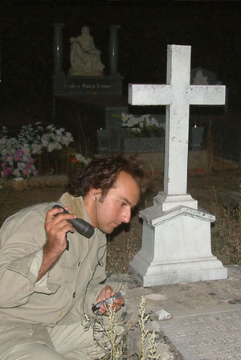

Cuarto Milenio
 De: La Frikipedia, la enciclopedia extremadamente seria.
De: La Frikipedia, la enciclopedia extremadamente seria.
De la serie Programas de TV:
Salón de Iker Jimenez Centro de mando de "La nave del misterio", donde se rueda el programa.
| Idioma original:
|
Psicofónico, Mormón, Raeliano
|
| Creador:
|
Íker Jiménez, Carmen Porter, el fantasma de Jiménez del Oso
|
| Duración:
|
Cuatro milenios
|
| No. Episodios:
|
E = mc2
|
| No. Temporadas:
|
X0P2D
|
| ¿Aún se transmite?:
|
Desde el mas allá
|
| Género:
|
Es un misterio
|
| Nivel de frikismo:
|
Batió el récord histórico del Frikitest
|
| Películas:
|
Las que nos cuenta Iker Jiménez
|
Un programa donde hay aliens y fantasmas follando a la vez
«¿Qué haces en mi nave espacial?»
~ Íker Jiménez a Bruce Willis
«¿Qué nave espacial? ¡Esto es un puto salón!»
~ Bruce Willis a Íker Jiménez
«Bienvenidos a Cuarto, Cuarto, Cuarto... Cuarto Milenio »
~ Íker Jiménez Al inicio del programa
«Bienvenidos... a la nave... del misterio»
~ Íker Jiménez Dando misterio al asunto
Cuatro Milenio, también conocido como la Nave del Misterio, es un famoso programa de Cuatro dedicado a la investigación y desarrollo de fenómenos para-anormales en todo el mundo.
Descripción
Pum, de repente la pantalla de Cuatro se pone toda oscura y empieza a sonar una música inquietante tipo regayton al tiempo que salen imágenes raras y morbosas tipo Saw. En fin, el opening acaba y aparece una vista alta de un lugar todo oscuro, lleno de libros viejos, estatuas raras follando, máquinas de escribir de la edad de nuestra abuela y una mesa enorme en forma de A en medio. Allí se halla sentado en un sillón, el gran maestre del asunto, Íker Jiménez, que empieza a decir con voz de pito tenebrosa algo así como: "Buenas noches, y bienvenidos a la Nave del Misterio". Luego hace algún comentario teatral para dar paso a un tema de conversación que puede ser cualquier cosa paranormal del mundo: la Virgen de Fátima comiendose a un bebe, unos fantasmas rodeando a una chica y violandola, una escultura precolombina con la cara de Falete, etc.
 Íker Jiménez investigando la tumba de Chanquete.
A continuación da paso a la mesa de debate y aparecen cuatro tipos sentados con pinta de expertos: Uno de ellos es Enrique de Vicente, que se encarga de dar inicio al debate soltando una serie de burradas a cual más grande. Luego es el turno de José Manual Nieves, un periodista que se hace pasar por científico, y cuyo cometido es tirar por tierra todas las tonterías que salen de la boca de Enrique de Vicente (lo cual no es muy difícil), luego este contraataca soltando aún más burradas y Nieves sigue desmontando todas sus teorías sin ni si quiera despeinarse, así hasta que Enrique ya no se le ocurren más burradas y le explota la cabeza se empieza a desviar del tema. Los otros dos invitados son sólo de relleno.
Es en ese momento cuando Iker Jimenez da por terminado el debate y empieza lo realmente aburrido. Aparece Carmen Porter para ponernos al día con las "noticias del misterio", que básicamente son aquellas noticias que ningún medio quiere emitir por lo chorras que son. En ocasiones también aparece Santiago Camacho, experto en temas sobre conspiración, que nos cuenta cualquier milonga que haya leído en los foros de internet, normalmente escritas por algún friki virgen de 40 años (sin ofender, IP anónima).
Aquí es donde termina la primera parte del programa, para dar paso a una versión extendida del Teletienda. Tras media hora de publicidad, cuando ya todo el mundo se ha ido a la cama, comienza la segunda parte del programa, que como ha nadie le interesa, la rellenan con algún reportaje absurdo, casi siempre de ancianos que han visto a la virgen o al fantasma de Chanquete. Después de eso aparece la dentona de marras, Carmen Porter, junto a una pantalla por ahí enterrada en el plató, y sacan unas fotografías en las que aparecen fantasmas, OVNIs y no sé que más. Ocasionalmente sacan algún vídeo que hemos visto 1000 veces en Youtube.
Una musiquilla en plan Chill-Out da paso a la recta final del programa, donde Iker Jiménez nos obsequia con una reflexión socio-filosófica que sólo entiende él, y que hace el efecto de un somnífero infalible a todo aquel valiente que aún siga viendo el programa.
Invitados destacados y colaboradores
Cuarto Milenio cuenta con un gran equipo de invitados y colaboradores, expertos en las mas prestigiosas materias científicas (y no tan científicas).
- Carmen Porter: Es la co-presentadora del programa y a la vez esposa de Iker Jimenez. La metió en el programa porque no encontraban a nadie mas que quisiera hacer su papel.
- Dr. José Cabrera: Supuestamente es psiquiatra-forense, pero le llaman para hablar sobre cualquier tema cuando nadie mas quiere ir al programa, que suele ser el 90% de las veces. Por este motivo hace el papel de médico, cirujano, pediatra, urólogo, ginecólogo, biólogo, cura, astrólogo, curandero, historiador, físico, zoólogo (que no zoofílico), antropólogo, ufólogo, periodísta, escritor, exorcista, demonólogo, detective, CSI, político, sociólogo, criminólogo y cazafantasmas, entre otros...
- Santiago Camacho: Dice ser periodista, pero mas bien es un friki que ve conspiraciones por todas partes. Se ha leído todos los libros y visto todos los documentales existentes sobre conspiraciones. El pobre hombre vive con el miedo en el cuerpo porque se cree que los hombres de negro andan tras él; se piensa que el mundo es una mentira creada por el gobierno de los estados unidos, que a su vez es una mentira creada por la CIA, que a su vez es una mentira creada por los hombres de nergo, que a su vez es una mentira creada por una raza alienígena superavanzada, que a su vez... (etc...)
- Grupo HEPTA: Es un grupo de
ancianos experto grupo de científicos que como se aburrían en el geriátrico se dedican a timar a la gente cazar fantasmas.
- Enrique de Vicente: Hay quien dice que es el director de la revista Año Cero pero solo sabemos con certeza que en realidad es un viejo enano que hace el papel de paranoico con brotes esquizofrénicos lleno de teorías de conspiración de carácter fatalista que concluyen en el fin del mundo y de la civilización, también hace de archienemigo del Dr. José Cabrera ya que este siempre pone en evidencia sus falacias, pero Enrique siempre se escusa como que el siempre plantea una hipótesis alternativa a la historia que nos cuentan.
- Jose Manuel Nieves: Enemigo por excelencia de Enrique de Vicente y de Vázquez, redactor en el periódico ABC
DEF..., mientras que de Vicente y Vázquez son unos flipaos del rollo parAnormal, Nieves es todo lo contrario, un flipao (también) pero por la ciencia. Suele ser invitado al programa junto con de Vicente y/o Vázquez para "debatir" (Cuando digo debatir me refiero a gritar como energúmenos y tratar de impedir que el otro hable) mientras que todos esperamos que se den de hostias en el plató.
El barbas de bricomanía Santiago Vázquez:Otro invitado de primer nivel destaca en el campo de lo parAnormal, su especialidad son las terminologías raras y largas, relacionarlo todo con las psicofonías que él mismo graba y cualquier cosa por chorra que sea de la paraciencia relacionada con espíritus y almas errantes. Se ha filtrado por Wikileaks que será protagonista (junto con Paloma Navarrete e Iker) en la película cazafantasmas 3 (♫♪ na na na nana na na na na na nana... Ghostbusters ♫♪... perdón me he emocionado).- El excelentísimo Doctor José Miguel GAONA:Psiquiatra al que invitan al programa de vez en cuando (Aunque él esta igual de loco que todos ellos) Siempre usa adjetivos como impresionado o interesado (es muy impresionable) y trae loquit@s a l@s seguidor@s del programa (Si amigos, les pone berracos)
- Paloma
San Basilio Navarrete: Licenciada en farmacia y psicología, pero la invitan al plató porque tiene superpoderes de evidencia y siente perturbaciones en la fuerza (como si del maestro Yoda tratase se) y es capaz de charlar con los muertos (a lo niño del sexto sentido), digamos que es una combinación de ambos.
- Manuel Martín-Loeches: Conocido también como El mentefría que supuestamente es profesor de Psicobiología, al igual que Nieves
él por la ciencia MA-TA es un escéptico que suele aparecer en los debates para enfrentarse con De Vicente y Vázquez junto con Nieves su ámbito de especializacion es desmontar las gilipolleces de Vázquez o De Vicente es la ciencia, en especial la biología y matizando aun más el cerebro humano.
- Javier Pérez Campos: Conocido como el Becario, suele ser el chico de los recados que va de aquí para allá, a lugares donde nadie quiere ir... (Casas malditas, habitaciones donde supuestamente hay fantasmas, lugares siniestros etc.)
Los otros invitados
Son personajes secundarios que salen en los reportajes de cuarto milenio,suelen ser objeto de conversación de los personajes del apartado anterior y algunos de ellos no son ni humanos.
- El
poltergay poltergeist: es un cabrón fantasma sin vida social que va de okupa
en cualquier apartamento o vivienda (incluso la de Iker) y hace lo que mas le gusta hacer que consiste: en romper la vajilla china de tu tatarabuela,tirarte tu TV al suelo y acosarte mientras duermes etc...
- El Enlutado:es una sombra que se aparece en los caminos y en tu cama (si eres testigo de Jeovah)
¿Sabías que...
- ...en Cuarto Milenio no sale Frikipedia?
- ...pero sí sale Death Note?
- ...Carmen Porter lleva una mascara de latex debajo de una capa de maquillaje en la cara debido a que es extremadamente fea.
- ...Iker Jimenez es un completo idiota debido a que lleva 4 power balance y todavía no se ha hecho con el poder.
- ...Iker se incrusta pelo para luchar contra la calvicie.
- ...Cualquier cosa que no tenga explicación son OVNIS o fantasmas, y aunque la tenga también es por los OVNIS y los espectros?
- ...Santiago Vázquez con una grabadora tiene para echar la tarde?
- ...En el programa son capaces de sacar un dialogo completo de una psicofonía, aunque sólo se escuchen ruidos y dure unos quince segundos?
Autor(es):
- Fordus
- Sygma
- Deimos987
- Monomadrid
- Frikisexigirl!!!
- Isonade
- Generibot
- The Doctor
- Likan003
- Bipolar21
Frikipedia 2005-2016, Licencia
GFDL 1.2 - Extraído por FrikiLeaks